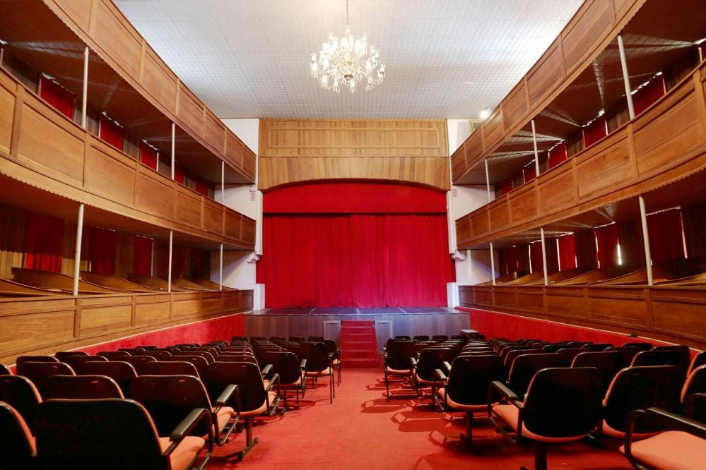
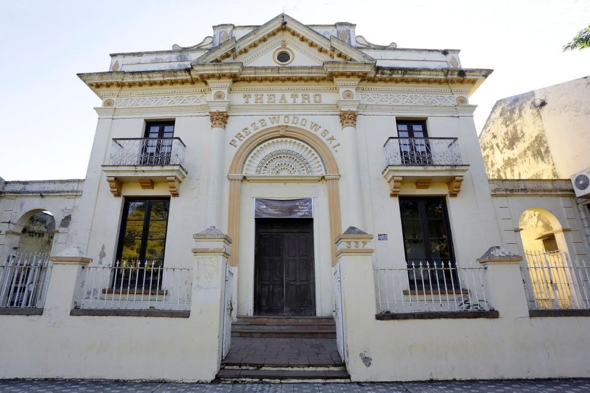
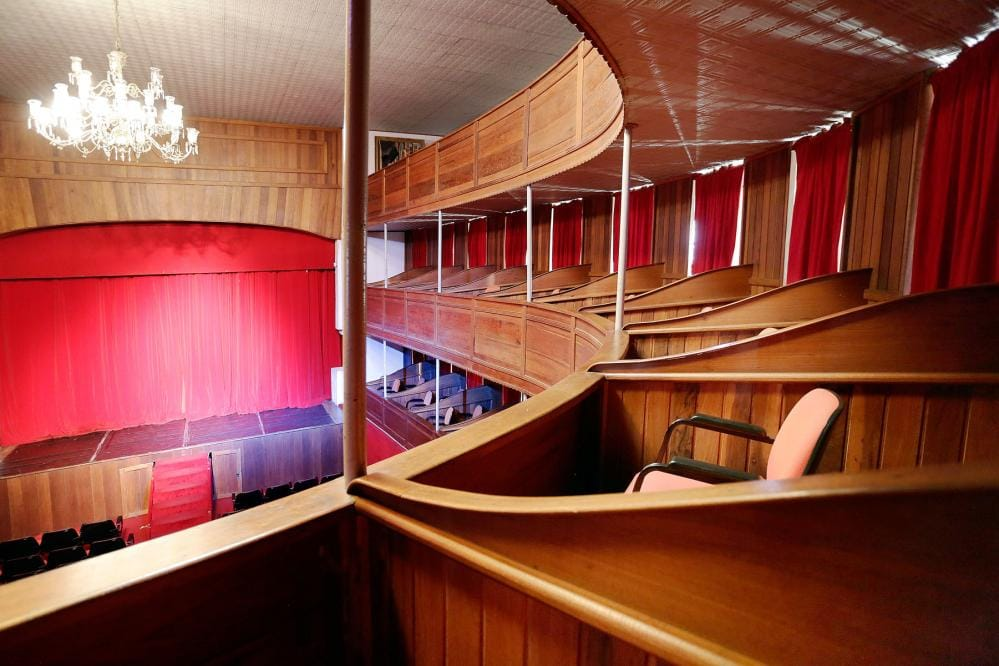
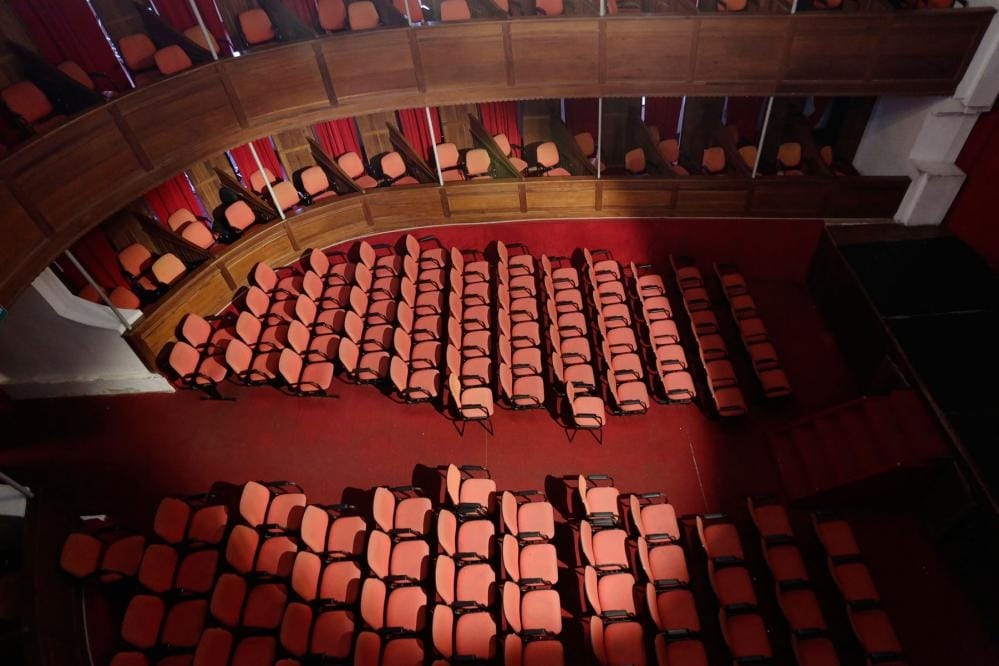

Teatro Prezewodowski


O Teatro (grafia original: Theatro) Prezewodowski é um dos mais antigos teatros da América Latina, com sua pedra fundamental lançada em 1883 e sua inauguração em 1886. É um prédio tombado pelo Instituto do Patrimônio Histórico e Artístico do Estado (IPHAE). Durante décadas o teatro serviu de palco para apresentações de campanhas artísticas nacionais e internacionais e acontecimentos sociais locais. Durante a Segunda Guerra as atividades diminuíram. A casa passou a funcionar como cinema, entrando em decadência e sendo fechada, definitivamente, em 1964. Tendo permanecido abandonado por muitos anos, sua recuperação foi concluída em 1992.
O nome do teatro é uma homenagem ao capitão-tenente da Marinha Brasileira Estanislau Prezewodowski, que participou da Guerra do Paraguai e serviu no município entre 1872-74. A característica mais impressionante da construção do Teatro, na época de sua construção, era a plateia móvel, com a finalidade de nivelar esta parte do palco, pois neste local também eram realizados bailes. Infelizmente, o mecanismo de elevação não existe mais. Outra característica única é a vertente de água abaixo do palco, que os arquitetos da época acreditavam que aprimoraria a acústica do prédio.
Por muitos anos, além da apresentação de conhecidos artistas do Teatro Nacional, o Theatro Prezewodowski abrigou companhias líricas de renome internacional, que traçavam seu roteiro Rio de Janeiro – São Paulo – Porto Alegre – Buenos Aires – Montevidéu, com escala obrigatória em Itaqui, um dos centros culturais da épocal. O Teatro Prezewodowski é de suma importância para toda comunidade itaquiense e mantém uma agenda de eventos repleta, como espetáculos de teatro, balés, eventos musicais, palestras, seminários, etc. O Teatro recebe cerca de 1000 visitantes por ano e tem capacidade para 218 pessoas.
Atendimento - Secretaria Municipal de Esporte, Cultura, Lazer e Turismo (SMECULT): De segunda a sexta-feira, das 7h às 13h. A secretaria fica no acesso à direita do teatro.

